import pymc as pm
import arviz as az
import numpy as np
import matplotlib.pyplot as plt
from numpy.random import default_rng
rng = default_rng(42)
print(f"PyMC version: {pm.__version__}")PyMC version: 5.25.1In Chapter 1 you learned why Bayesian thinking matters. Now you learn how to do it in code. This chapter introduces PyMC’s core machinery: the model context, distributions, sampling, and diagnostics. By the end you will have built a complete model from scratch, inspected its output, and verified it works.
Everything here generalises. The simple model we build—estimating the mean and spread of normally distributed data—uses the same workflow you will apply to hierarchical models, GLMs, and Gaussian processes in later chapters. Learn this workflow once, and you have learned the skeleton of every PyMC project.
import pymc as pm
import arviz as az
import numpy as np
import matplotlib.pyplot as plt
from numpy.random import default_rng
rng = default_rng(42)
print(f"PyMC version: {pm.__version__}")PyMC version: 5.25.1Every PyMC model starts the same way:
with pm.Model() as model:
# define your model here
...This pattern looks like opening a file with with open(...). The analogy is apt. Just as a file context manager handles cleanup when you are done, the model context manager handles bookkeeping. Every random variable you create inside the with block is automatically registered to that model.
Why a context manager? PyMC needs to track which random variables belong together. When you write pm.Normal("mu", mu=0, sigma=1) inside a model context, PyMC records that variable in an internal graph. Later, when you call pm.sample(), PyMC reads that graph and figures out how all the pieces connect. Without the context manager, PyMC would not know which variables belong to your model.
Think of it like a whiteboard. You say “okay, everything I draw on this whiteboard is part of Model A.” Then you sketch your distributions, your data, and your connections. When you step back, PyMC photographs the whiteboard and uses it for inference.
with pm.Model() as demo_model:
x = pm.Normal("x", mu=0, sigma=1)
y = pm.Normal("y", mu=x, sigma=0.5)
# The model knows about both variables:
print(demo_model.named_vars.keys())dict_keys(['x', 'y'])Two things to notice:
"x", "y"). This name appears in trace summaries, plots, and diagnostics. Pick descriptive names.y with mu=x. PyMC records this dependency in its computational graph. During sampling, it respects the relationship.You can also create a model without the as syntax:
model = pm.Model()
with model:
...Both are equivalent. The as form is more common because it reads naturally.
When you create a variable inside the context, PyMC does several things silently:
You never need to do any of this manually. The context manager is the glue that makes PyMC feel declarative—you describe the model, and PyMC figures out how to compute with it.
You can define multiple models in the same script. Each with pm.Model() block creates an independent model:
with pm.Model() as model_a:
x = pm.Normal("x", mu=0, sigma=1)
with pm.Model() as model_b:
x = pm.Normal("x", mu=5, sigma=2)The two x variables live in different models and do not interact. This is useful when you want to compare alternative model specifications on the same data.
Mistake 1: Forgetting the context. If you create a distribution outside any with pm.Model() block, PyMC raises an error. Every distribution needs a home.
Mistake 2: Mixing up models. If you have two models open (which is unusual), variables go to the innermost active context. Keep your model blocks clean and separate.
Mistake 3: Reusing variable names. Within one model, each variable name must be unique. PyMC uses names as dictionary keys. If you accidentally write pm.Normal("mu", ...) twice, you will get an error.
Distributions are the building blocks of Bayesian models. Each distribution represents your belief about what values a parameter or observation might take. PyMC provides dozens of distributions. Here are the ones you will use most often.
| Distribution | PyMC syntax | Typical use |
|---|---|---|
| Normal | pm.Normal("x", mu=0, sigma=1) |
Means, regression coefficients |
| Half-Normal | pm.HalfNormal("x", sigma=1) |
Standard deviations (positive only) |
| Exponential | pm.Exponential("x", lam=1) |
Rates, positive quantities |
| Uniform | pm.Uniform("x", lower=0, upper=1) |
Bounded unknowns |
| Beta | pm.Beta("x", alpha=2, beta=2) |
Probabilities (0 to 1) |
| Student-t | pm.StudentT("x", nu=3, mu=0, sigma=1) |
Heavy-tailed data |
| Distribution | PyMC syntax | Typical use |
|---|---|---|
| Bernoulli | pm.Bernoulli("x", p=0.5) |
Binary outcomes |
| Poisson | pm.Poisson("x", mu=5) |
Count data |
| Binomial | pm.Binomial("x", n=10, p=0.3) |
Counts out of N trials |
| Categorical | pm.Categorical("x", p=[0.2, 0.8]) |
Multi-class outcomes |
observed= Keyword: Data vs ParameterThis is the most important conceptual distinction in PyMC.
observed=: the variable is a parameter. PyMC treats it as unknown and will sample values for it.observed=: the variable is data. PyMC treats these values as fixed and known. They constrain the parameters.# Parameter: PyMC will infer this
mu = pm.Normal("mu", mu=0, sigma=10)
# Data: PyMC knows these values
y_obs = pm.Normal("y_obs", mu=mu, sigma=1, observed=data)When you mark a variable as observed, you are telling PyMC: “I measured these values. Use them to figure out what the parameters probably are.” This is the likelihood in Bayes’ theorem.
By default, a distribution creates a scalar. To create a vector of parameters, use the shape argument or PyMC’s named dimensions:
# A vector of 5 independent normal parameters:
betas = pm.Normal("betas", mu=0, sigma=1, shape=5)PyMC also supports named dimensions through coords and dims, which make it easier to label your parameters and keep track of what each dimension means:
coords = {"city": ["NYC", "LA", "Chicago"]}
with pm.Model(coords=coords) as model:
mu = pm.Normal("mu", mu=0, sigma=1, dims="city")Now mu is a 3-element vector, and each element is labelled with a city name. This labelling flows through to ArviZ plots and summaries, making your output much easier to read. We will use named dimensions extensively in the hierarchical models chapter.
How do you decide which distribution to use as a prior? Some guidelines:
Beta(1,1) is uniform; Beta(2,2) concentrates near 0.5.nu parameter controls tail weight— smaller nu means heavier tails.Do not agonise over prior choice. Chapter 5 (Bayesian Workflow) covers prior sensitivity analysis—a systematic way to check whether your results depend heavily on your prior choice.
Let us build a complete model. The problem: you have measured the heights of 100 people. You want to estimate the population mean height and the population standard deviation.
This is the “hello world” of Bayesian modeling. Simple enough to understand completely, complex enough to demonstrate the full workflow.
In a real project you would load a CSV. Here we simulate data so you can verify the model recovers the true values.
# True parameters (in a real problem, you don't know these)
true_mu = 170.0 # true mean height in cm
true_sigma = 6.5 # true standard deviation
# Simulate 100 height measurements
n_obs = 100
heights = rng.normal(loc=true_mu, scale=true_sigma, size=n_obs)
print(f"Sample mean: {heights.mean():.1f} cm")
print(f"Sample std: {heights.std():.1f} cm")
print(f"Sample size: {n_obs}")Sample mean: 169.7 cm
Sample std: 5.0 cm
Sample size: 100Priors encode what you believe before seeing the data. For heights, reasonable priors might be:
with pm.Model() as height_model:
# Priors for unknown parameters
mu = pm.Normal("mu", mu=170, sigma=20)
sigma = pm.HalfNormal("sigma", sigma=10)
# Likelihood: how the data connects to parameters
y_obs = pm.Normal(
"y_obs",
mu=mu,
sigma=sigma,
observed=heights,
)Let us walk through each line:
pm.Model() as height_model — creates the model context. Everything inside is part of this model.pm.Normal("mu", mu=170, sigma=20) — the prior on the mean. We believe the mean is probably around 170, but we are fairly uncertain (sigma=20 is wide).pm.HalfNormal("sigma", sigma=10) — the prior on the standard deviation. Half-normal is a common choice for scale parameters because it is always positive and puts most mass near zero, favouring simpler explanations.pm.Normal("y_obs", mu=mu, sigma=sigma, observed=heights) — the likelihood. Each observed height is modelled as a draw from a normal distribution with mean mu and standard deviation sigma. The observed=heights tells PyMC these are known values.That is the entire model. Three lines of actual content. Most PyMC models follow this exact pattern: priors, then likelihood.
pm.sample() DoesOnce the model is defined, you need to draw samples from the posterior distribution. This is where the computational magic happens.
with height_model:
idata = pm.sample(
draws=2000,
tune=1000,
chains=4,
random_seed=42,
)/Users/kundeng/Dropbox/Projects/bayeslearner-learn-pymc/.venv/lib/python3.10/site-packages/rich/live.py:260:
UserWarning: install "ipywidgets" for Jupyter support
warnings.warn('install "ipywidgets" for Jupyter support')
Chris Fonnesbeck calls pm.sample() “the magic inference button — just call sample() with no arguments.” That is barely an exaggeration. PyMC selects the NUTS sampler, tunes its step size and mass matrix, runs multiple chains, and checks for convergence — all from a single function call. You specified what the model is; PyMC figured out how to fit it. This separation of model from computation is what makes probabilistic programming powerful.
pm.sample() ran the NUTS sampler (No U-Turn Sampler), which is a variant of Hamiltonian Monte Carlo. You do not need to understand the sampler’s internals to use PyMC effectively, but here is the intuition:
Imagine you are blindfolded on a hilly landscape. The height at any point represents how probable those parameter values are. NUTS explores this landscape by simulating a ball rolling around the hills. It naturally spends more time in the valleys (high probability regions) and less time on the peaks (low probability regions). The “No U-Turn” part means it automatically decides how far to roll the ball before stopping—you do not need to tune this.
Fonnesbeck offers another analogy: think of NUTS as a skateboarder in a half-pipe. The skateboarder uses momentum to glide through the curved surface, naturally spending more time near the bottom (high-probability regions) and arcing up the sides (low-probability regions) before gravity pulls them back. Unlike a simple random walk that stumbles around blindly, the skateboarder exploits the geometry of the surface. That is why NUTS can handle hundreds or thousands of parameters where simpler samplers like Metropolis would crawl.
draws=2000: After tuning, collect 2000 samples per chain. More draws means more precise estimates of the posterior, but takes longer.tune=1000: Spend the first 1000 iterations adjusting the sampler’s internal settings (step size, mass matrix). These samples are discarded. Think of it as a warm-up period.chains=4: Run 4 independent sampling chains. Multiple chains let you check whether the sampler has converged—if all chains agree, that is a good sign.random_seed=42: Makes results reproducible.When sampling runs, you see a progress bar for each chain. It shows:
Running multiple chains serves as a convergence check. Each chain starts from a different random point. If the posterior is well behaved, all chains should explore the same region and produce similar estimates. If one chain gets stuck somewhere different, that signals a problem. The standard diagnostic for this is \(\hat{R}\) (R-hat), which we will examine shortly.
The tuning phase (default 1000 iterations) is where the sampler adapts to the geometry of your posterior. Specifically, NUTS adjusts two things:
mu and sigma are correlated, the sampler learns to propose moves that follow that correlation.You do not set these manually. PyMC’s default tuning algorithm (based on the Stan warmup scheme) handles it. The tuning samples are discarded because the sampler is not yet exploring the posterior fairly—it is still learning the landscape.
After sampling, PyMC may print warnings:
target_accept (e.g., pm.sample(target_accept=0.95)).draws=4000, tune=2000), or check for multimodality in your posterior.We will address all of these in detail in Chapter 6 (MCMC Diagnostics). For now, just know that PyMC tells you when something goes wrong.
NUTS is the default, but PyMC also offers:
For 95% of models in this book, NUTS is the right choice. PyMC selects it automatically when all parameters are continuous.
pm.sample() returns an InferenceData object (from the ArviZ library). This is your one-stop shop for all posterior information.
print(type(idata))
print(idata)<class 'arviz.data.inference_data.InferenceData'>
Inference data with groups:
> posterior
> sample_stats
> observed_dataThe posterior samples live in idata.posterior. This is an xarray Dataset with dimensions (chain, draw, parameter):
# Shape: 4 chains x 2000 draws
print(f"mu shape: {idata.posterior['mu'].shape}")
# Get all mu samples as a flat numpy array
mu_samples = idata.posterior["mu"].values.flatten()
print(f"Number of mu samples: {len(mu_samples)}")mu shape: (4, 2000)
Number of mu samples: 8000ArviZ provides a convenient summary table:
summary = az.summary(idata, var_names=["mu", "sigma"])
print(summary) mean sd hdi_3% hdi_97% mcse_mean mcse_sd ess_bulk \
mu 169.673 0.506 168.707 170.591 0.006 0.006 7977.0
sigma 5.115 0.367 4.444 5.796 0.004 0.004 7429.0
ess_tail r_hat
mu 5519.0 1.0
sigma 5789.0 1.0 The summary includes:
As Fonnesbeck emphasises: “You want \(\hat{R}\) close to one; a potential scale reduction factor greater than 1.01 signals non-convergence.” If any parameter has \(\hat{R} > 1.01\), stop interpreting your results. The chains have not agreed on where the posterior is, and any summary statistic you compute is unreliable. Run longer, reparameterise, or simplify the model before drawing conclusions.
# Posterior mean
mu_mean = float(
idata.posterior["mu"].mean(dim=["chain", "draw"])
)
# Posterior median
mu_median = float(
np.median(idata.posterior["mu"].values)
)
# 94% HDI
mu_hdi = az.hdi(idata, var_names=["mu"])["mu"].values
print(f"Posterior mean of mu: {mu_mean:.2f}")
print(f"Posterior median of mu: {mu_median:.2f}")
print(f"94% HDI of mu: [{mu_hdi[0]:.2f}, "
f"{mu_hdi[1]:.2f}]")
print(f"True mu: {true_mu}")Posterior mean of mu: 169.67
Posterior median of mu: 169.68
94% HDI of mu: [168.71, 170.59]
True mu: 170.0Numbers are good. Pictures are better. ArviZ provides a suite of plots designed specifically for Bayesian inference output.
The trace plot is your first diagnostic. It shows two things for each parameter: the posterior distribution (left) and the sampling history (right).
az.plot_trace(idata, var_names=["mu", "sigma"])
plt.tight_layout()
plt.show()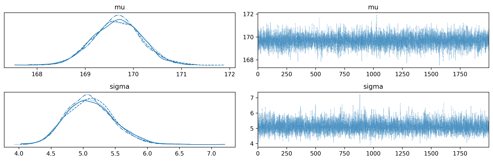
What to look for:
A cleaner view of just the posterior distributions:
az.plot_posterior(
idata,
var_names=["mu", "sigma"],
ref_val=[true_mu, true_sigma],
)
plt.tight_layout()
plt.show()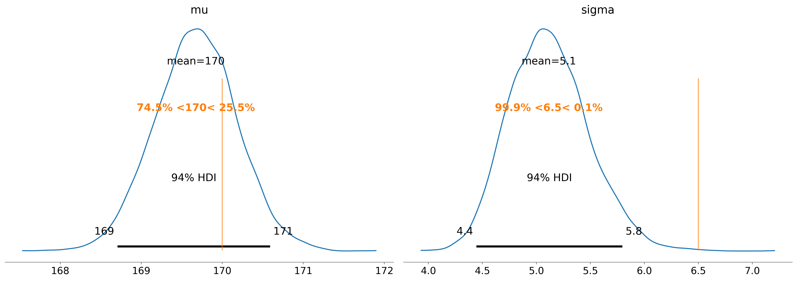
The ref_val argument adds vertical lines at the true values so you can see how well the model recovered them. In a real analysis you would not have true values, but during development with simulated data this check is essential.
Forest plots are most useful when you have many parameters (for example, group-level effects in a hierarchical model). For our two-parameter model, they are overkill, but let us see the syntax:
az.plot_forest(idata, var_names=["mu", "sigma"])
plt.tight_layout()
plt.show()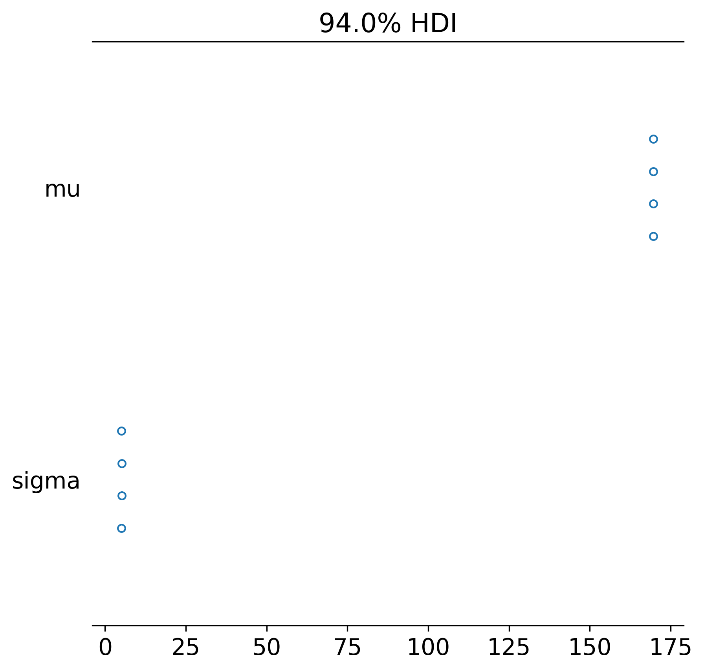
Each row shows the posterior interval for one parameter. The thick line is the inner credible interval, the thin line the outer. The dot is the posterior mean.
A quick reference for choosing the right visualisation:
| Question | Plot |
|---|---|
| Did my sampler converge? | az.plot_trace() |
| What does the posterior look like? | az.plot_posterior() |
| How do parameters compare? | az.plot_forest() |
| Does my model fit the data? | az.plot_ppc() |
| Are there sampling problems? | az.plot_energy() |
| How correlated are parameters? | az.plot_pair() |
Let us see one more useful plot—the pair plot, which shows correlations between parameters:
az.plot_pair(
idata,
var_names=["mu", "sigma"],
kind="kde",
marginals=True,
figsize=(6, 6),
)
plt.tight_layout()
plt.show()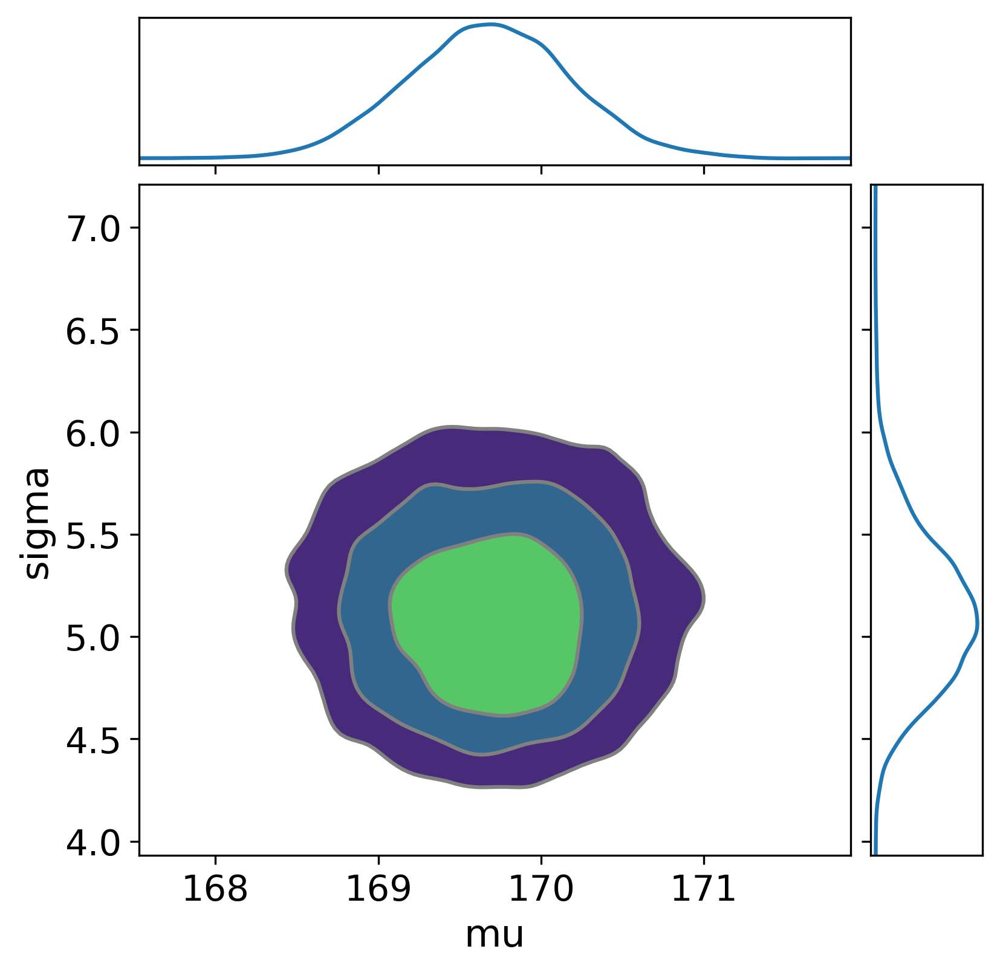
The pair plot shows the joint posterior of mu and sigma. If the contours are elongated (like a tilted ellipse), the parameters are correlated—knowing one tells you something about the other. For this simple model, the correlation is typically weak.
Before you look at data, ask: “Does my model generate plausible data?” If your priors are badly chosen, the model can generate nonsensical predictions even before fitting. Prior predictive checks catch this.
The idea is simple. Take your model’s priors, ignore the observed data, and simulate datasets from those priors alone. If those simulated datasets look nothing like what you would expect to observe in reality, your priors need adjustment.
with height_model:
prior_pred = pm.sample_prior_predictive(
samples=500,
random_seed=42,
)fig, axes = plt.subplots(nrows=1, ncols=2, figsize=(10, 4))
# Prior distributions of parameters
axes[0].hist(
prior_pred.prior["mu"].values.flatten(),
bins=30,
alpha=0.7,
color="steelblue",
)
axes[0].set_xlabel("mu (cm)")
axes[0].set_title("Prior on mu")
# Simulated data from the prior
prior_y = prior_pred.prior_predictive["y_obs"].values.flatten()
axes[1].hist(
prior_y[np.isfinite(prior_y)],
bins=50,
alpha=0.7,
color="coral",
range=(100, 250),
)
axes[1].set_xlabel("Height (cm)")
axes[1].set_title("Prior predictive data")
plt.tight_layout()
plt.show()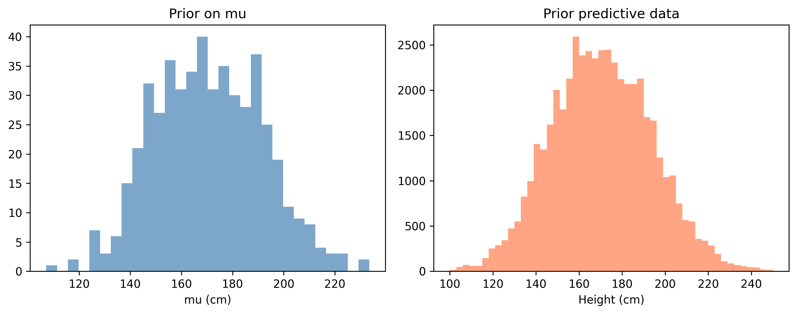
What to look for: The prior predictive data should cover the range of values you might plausibly observe. For heights, anything between 140 and 200 cm is reasonable. If your prior predictive generates heights of 500 cm or -100 cm with non-trivial probability, your priors are too vague.
Our priors are intentionally wide (sigma=20 on mu), so the prior predictive will span a broad range. That is fine—we want the data to do most of the work. What we do not want is for the priors to be so extreme that sampling becomes difficult.
Here is how experienced modellers use prior predictive checks in practice:
pm.sample_prior_predictive(). Generate, say, 500 simulated datasets.This is not about getting the priors “right” on the first try. It is about catching obviously wrong priors before you waste time sampling. A prior that generates heights of -50 cm is wrong. A prior that generates heights between 100 and 240 cm is fine—it is vague but not absurd.
sigma=0.01 on your Normal prior). The prior is so confident it leaves no room for learning.Posterior predictive checks are the single most important model validation tool. After fitting, you ask: “Can my fitted model generate data that looks like the real data?”
The logic: draw parameter values from the posterior, then simulate new data from the likelihood using those parameter values. If the simulated data matches the real data’s patterns (shape, spread, skewness), the model is adequate. If not, something is wrong.
with height_model:
posterior_pred = pm.sample_posterior_predictive(
idata,
random_seed=42,
)/Users/kundeng/Dropbox/Projects/bayeslearner-learn-pymc/.venv/lib/python3.10/site-packages/rich/live.py:260:
UserWarning: install "ipywidgets" for Jupyter support
warnings.warn('install "ipywidgets" for Jupyter support')
az.plot_ppc(
posterior_pred,
observed_rug=True,
figsize=(8, 4),
)
plt.xlabel("Height (cm)")
plt.title("Posterior Predictive Check")
plt.show()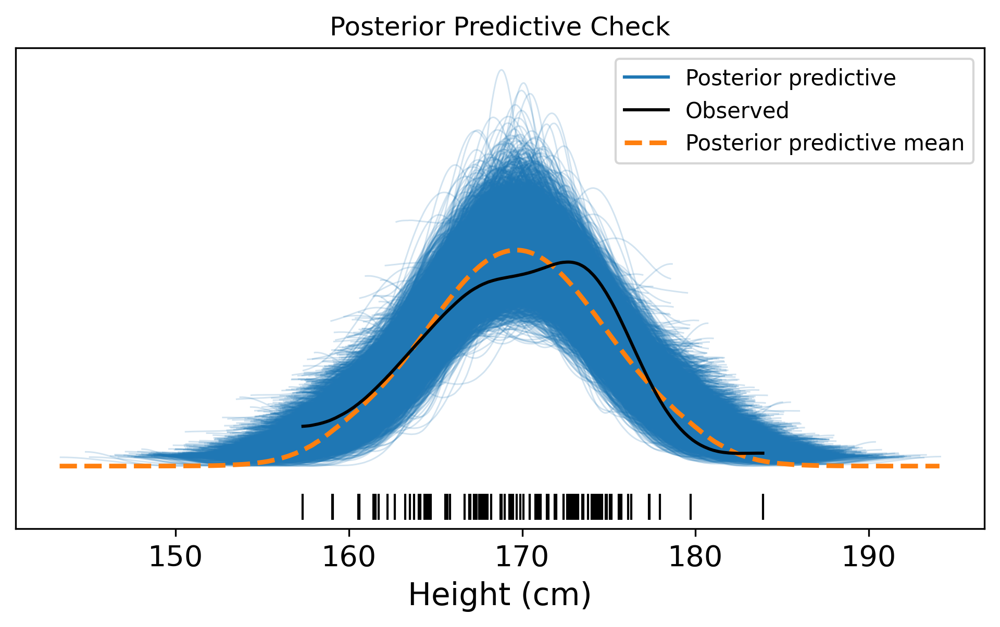
Reading the plot:
Common failures and what they mean:
The visual az.plot_ppc() is a qualitative check. For a more rigorous assessment, you can compute test statistics on both the real data and the simulated data, then compare:
# Get posterior predictive samples
pp_samples = posterior_pred.posterior_predictive[
"y_obs"
].values.reshape(-1, n_obs)
# Compute a test statistic on each simulated dataset
simulated_stds = pp_samples.std(axis=1)
observed_std = heights.std()
fig, ax = plt.subplots(figsize=(7, 4))
ax.hist(
simulated_stds,
bins=30,
alpha=0.7,
color="steelblue",
edgecolor="white",
label="Simulated",
)
ax.axvline(
x=observed_std,
color="red",
linewidth=2,
linestyle="--",
label=f"Observed std = {observed_std:.2f}",
)
ax.set_xlabel("Standard deviation of dataset")
ax.set_ylabel("Frequency")
ax.set_title("Posterior Predictive Check: Std Dev")
ax.legend()
plt.tight_layout()
plt.show()
# Bayesian p-value: proportion of simulations
# with std > observed std
p_value = (simulated_stds >= observed_std).mean()
print(f"Bayesian p-value (std): {p_value:.3f}")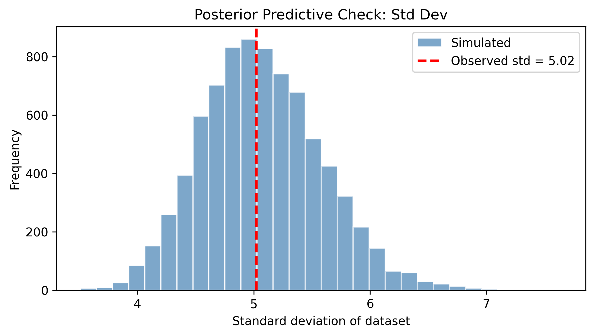
Bayesian p-value (std): 0.515A Bayesian p-value near 0.5 is ideal—it means the observed test statistic sits in the middle of the predictive distribution. Values near 0 or 1 indicate the model systematically under- or over-predicts that aspect of the data.
A useful practice is to compare priors and posteriors directly. This shows how much the data moved your beliefs:
fig, axes = plt.subplots(nrows=1, ncols=2, figsize=(10, 4))
# mu: prior vs posterior
prior_mu = prior_pred.prior["mu"].values.flatten()
post_mu = idata.posterior["mu"].values.flatten()
axes[0].hist(
prior_mu, bins=40, alpha=0.5, density=True,
color="gray", label="Prior",
)
axes[0].hist(
post_mu, bins=40, alpha=0.7, density=True,
color="steelblue", label="Posterior",
)
axes[0].set_xlabel("mu")
axes[0].set_title("Prior vs Posterior: mu")
axes[0].legend()
# sigma: prior vs posterior
prior_sigma = prior_pred.prior["sigma"].values.flatten()
post_sigma = idata.posterior["sigma"].values.flatten()
axes[1].hist(
prior_sigma, bins=40, alpha=0.5, density=True,
color="gray", label="Prior",
)
axes[1].hist(
post_sigma, bins=40, alpha=0.7, density=True,
color="steelblue", label="Posterior",
)
axes[1].set_xlabel("sigma")
axes[1].set_title("Prior vs Posterior: sigma")
axes[1].legend()
plt.tight_layout()
plt.show()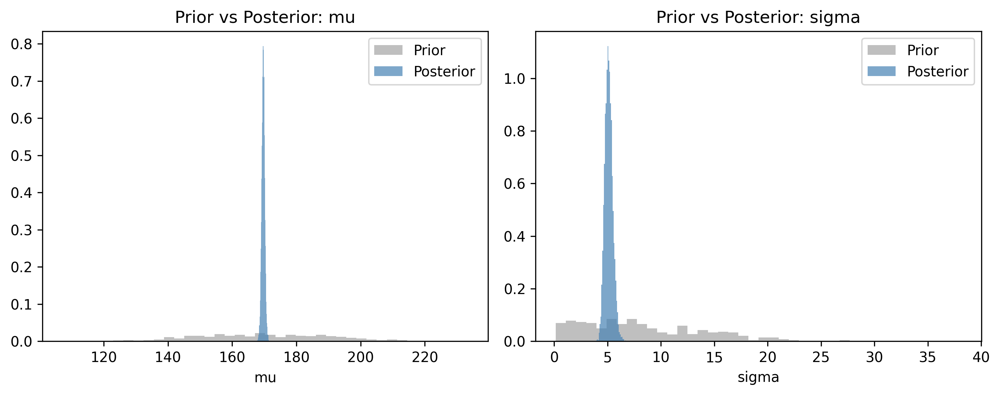
Notice how much narrower the posteriors are compared to the priors. With 100 data points, the data dominates the prior. The posterior concentrates tightly around the true values. This is learning: the data sharpened our beliefs from “somewhere between 130 and 210” to “almost certainly between 168 and 172.”
Sometimes you want to track a computed quantity that depends on your parameters but is not itself a random variable. For example, the difference between two group means, or a predicted probability.
pm.Deterministic() tells PyMC: “Record this quantity in the trace so I can inspect it later.”
# Suppose we want to know: what fraction of the population
# is taller than 180 cm?
with pm.Model() as height_model_v2:
mu = pm.Normal("mu", mu=170, sigma=20)
sigma = pm.HalfNormal("sigma", sigma=10)
# Derived quantity: probability of being > 180 cm
# Using the normal CDF (complementary)
from pytensor.tensor import erfc
z_score = (180 - mu) / (sigma * np.sqrt(2))
prob_above_180 = pm.Deterministic(
"prob_above_180",
0.5 * erfc(z_score),
)
y_obs = pm.Normal(
"y_obs",
mu=mu,
sigma=sigma,
observed=heights,
)
idata_v2 = pm.sample(
draws=2000,
tune=1000,
chains=4,
random_seed=42,
)/Users/kundeng/Dropbox/Projects/bayeslearner-learn-pymc/.venv/lib/python3.10/site-packages/rich/live.py:260:
UserWarning: install "ipywidgets" for Jupyter support
warnings.warn('install "ipywidgets" for Jupyter support')
az.plot_posterior(idata_v2, var_names=["prob_above_180"])
plt.title("Posterior: P(height > 180 cm)")
plt.show()
prob_summary = az.summary(
idata_v2, var_names=["prob_above_180"]
)
print(prob_summary)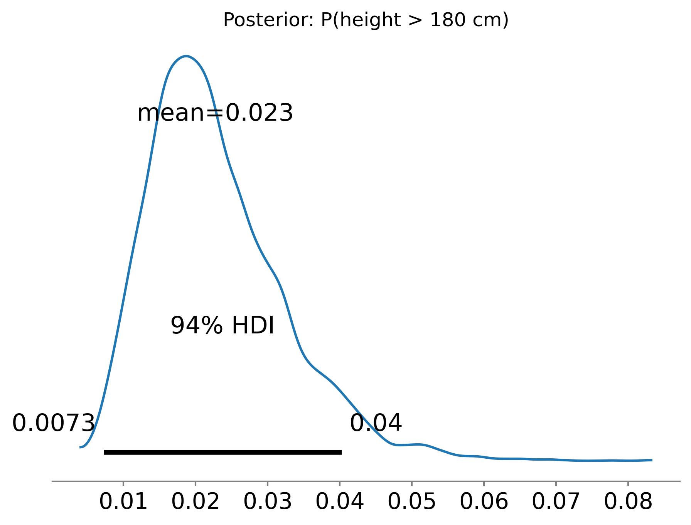
mean sd hdi_3% hdi_97% mcse_mean mcse_sd ess_bulk \
prob_above_180 0.023 0.009 0.007 0.04 0.0 0.0 7566.0
ess_tail r_hat
prob_above_180 5483.0 1.0 Without pm.Deterministic, you could compute this after the fact from the mu and sigma samples. But pm.Deterministic is cleaner: it stores the derived quantity directly in the trace, so it appears in summaries and plots automatically.
When to use pm.Deterministic:
pm.Deterministic("diff", mu_A - mu_B)).When not to use it:
Let us summarise the complete PyMC workflow in one coherent block. This is the pattern you will follow for every model in this book:
# ----- 1. Data -----
data = rng.normal(loc=5.0, scale=2.0, size=200)
# ----- 2. Model -----
with pm.Model() as workflow_model:
# Priors
mu = pm.Normal("mu", mu=0, sigma=10)
sigma = pm.HalfNormal("sigma", sigma=5)
# Likelihood
obs = pm.Normal("obs", mu=mu, sigma=sigma, observed=data)
# ----- 3. Prior predictive check -----
prior_checks = pm.sample_prior_predictive(
samples=500, random_seed=42
)
# ----- 4. Sample the posterior -----
trace = pm.sample(
draws=2000,
tune=1000,
chains=4,
random_seed=42,
)
# ----- 5. Posterior predictive check -----
ppc = pm.sample_posterior_predictive(
trace, random_seed=42
)/Users/kundeng/Dropbox/Projects/bayeslearner-learn-pymc/.venv/lib/python3.10/site-packages/rich/live.py:260:
UserWarning: install "ipywidgets" for Jupyter support
warnings.warn('install "ipywidgets" for Jupyter support')
/Users/kundeng/Dropbox/Projects/bayeslearner-learn-pymc/.venv/lib/python3.10/site-packages/rich/live.py:260:
UserWarning: install "ipywidgets" for Jupyter support
warnings.warn('install "ipywidgets" for Jupyter support')
# ----- 6. Diagnostics -----
print(az.summary(trace, var_names=["mu", "sigma"]))
fig, axes = plt.subplots(nrows=2, ncols=2, figsize=(10, 6))
az.plot_trace(trace, var_names=["mu", "sigma"], axes=axes)
plt.tight_layout()
plt.show() mean sd hdi_3% hdi_97% mcse_mean mcse_sd ess_bulk ess_tail \
mu 4.925 0.142 4.659 5.190 0.002 0.002 7822.0 5842.0
sigma 2.012 0.101 1.822 2.201 0.001 0.001 8348.0 6182.0
r_hat
mu 1.0
sigma 1.0 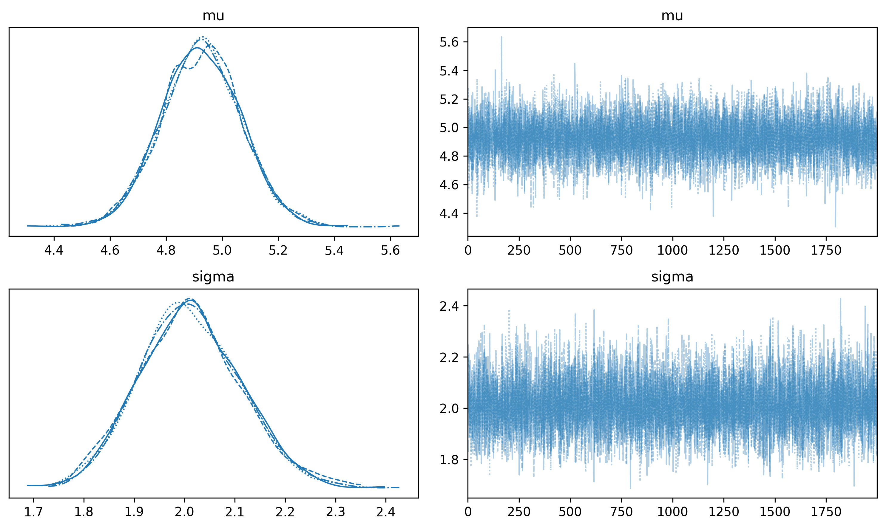
# ----- 7. Posterior predictive plot -----
az.plot_ppc(ppc, figsize=(8, 4))
plt.title("Posterior Predictive Check")
plt.show()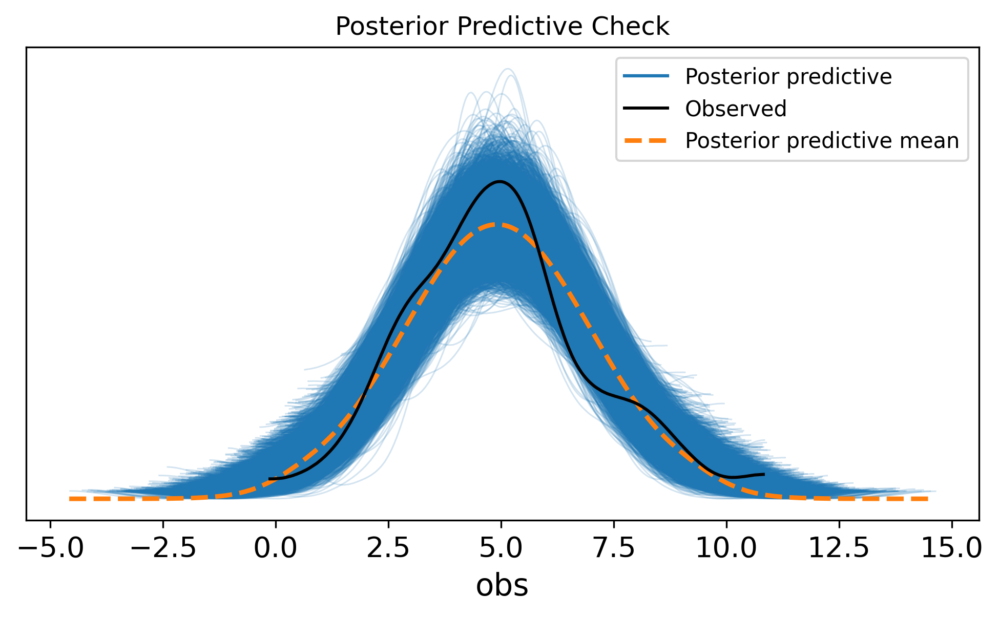
This seven-step sequence—data, model, prior check, sample, posterior check, diagnostics, interpretation—is the backbone of every Bayesian analysis. Some steps are quick (a glance at the trace plot). Others require thought (choosing priors, interpreting posterior predictive failures). But the sequence is always the same.
Exercise 1. You flip a coin 50 times and observe 32 heads. Build a PyMC model that estimates the probability of heads. Use a pm.Beta prior and a pm.Binomial likelihood. Report the posterior mean and 94% HDI for the probability parameter.
n_flips = 50
n_heads = 32
with pm.Model() as coin_model:
# Beta(2, 2) is a weakly informative prior:
# slightly favours values near 0.5
p = pm.Beta("p", alpha=2, beta=2)
# Likelihood: observed 32 heads in 50 flips
y = pm.Binomial(
"y", n=n_flips, p=p, observed=n_heads
)
coin_trace = pm.sample(
draws=2000,
tune=1000,
chains=4,
random_seed=42,
)
print(az.summary(coin_trace, var_names=["p"]))
az.plot_posterior(coin_trace, var_names=["p"])
plt.show()/Users/kundeng/Dropbox/Projects/bayeslearner-learn-pymc/.venv/lib/python3.10/site-packages/rich/live.py:260:
UserWarning: install "ipywidgets" for Jupyter support
warnings.warn('install "ipywidgets" for Jupyter support')
mean sd hdi_3% hdi_97% mcse_mean mcse_sd ess_bulk ess_tail r_hat
p 0.63 0.065 0.509 0.751 0.001 0.001 3464.0 5693.0 1.0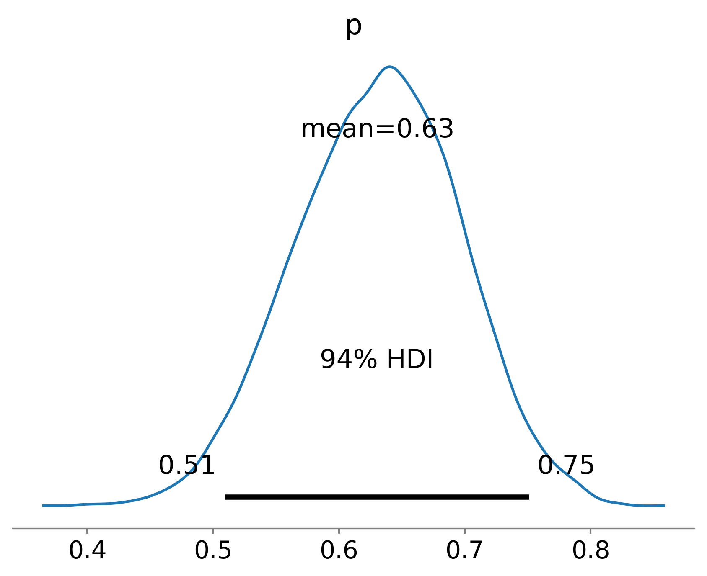
Exercise 2. Modify the height model from this chapter to use a Student-t likelihood instead of Normal. Use pm.StudentT with nu=4 degrees of freedom. Compare the posterior estimates of mu and sigma to the Normal-likelihood version. Which model has wider credible intervals? Why?
with pm.Model() as robust_model:
mu = pm.Normal("mu", mu=170, sigma=20)
sigma = pm.HalfNormal("sigma", sigma=10)
# Student-t likelihood (heavier tails)
y_obs = pm.StudentT(
"y_obs",
nu=4,
mu=mu,
sigma=sigma,
observed=heights,
)
robust_trace = pm.sample(
draws=2000,
tune=1000,
chains=4,
random_seed=42,
)
print("--- Student-t model ---")
print(az.summary(robust_trace, var_names=["mu", "sigma"]))
print("\n--- Normal model (from earlier) ---")
print(az.summary(idata, var_names=["mu", "sigma"]))/Users/kundeng/Dropbox/Projects/bayeslearner-learn-pymc/.venv/lib/python3.10/site-packages/rich/live.py:260:
UserWarning: install "ipywidgets" for Jupyter support
warnings.warn('install "ipywidgets" for Jupyter support')
--- Student-t model ---
mean sd hdi_3% hdi_97% mcse_mean mcse_sd ess_bulk \
mu 169.866 0.523 168.885 170.834 0.006 0.006 7993.0
sigma 4.370 0.390 3.614 5.073 0.005 0.004 7388.0
ess_tail r_hat
mu 5733.0 1.0
sigma 5859.0 1.0
--- Normal model (from earlier) ---
mean sd hdi_3% hdi_97% mcse_mean mcse_sd ess_bulk \
mu 169.673 0.506 168.707 170.591 0.006 0.006 7977.0
sigma 5.115 0.367 4.444 5.796 0.004 0.004 7429.0
ess_tail r_hat
mu 5519.0 1.0
sigma 5789.0 1.0 The Student-t model typically produces slightly wider credible intervals because the heavier-tailed likelihood allows for more variation in the data. Each observation carries less “certainty” than it would under a Normal likelihood.
Exercise 3. Run a prior predictive check on the coin model from Exercise 1. Plot a histogram of simulated “number of heads” from the prior. Does the prior generate plausible data?
with coin_model:
coin_prior = pm.sample_prior_predictive(
samples=1000, random_seed=42
)
prior_heads = (
coin_prior.prior_predictive["y"].values.flatten()
)
fig, ax = plt.subplots(figsize=(7, 4))
ax.hist(
prior_heads,
bins=range(0, 52),
alpha=0.7,
color="steelblue",
edgecolor="white",
)
ax.axvline(
x=n_heads, color="red", linestyle="--",
label=f"Observed ({n_heads} heads)",
)
ax.set_xlabel("Number of heads (out of 50)")
ax.set_ylabel("Frequency")
ax.set_title("Prior Predictive: Coin Model")
ax.legend()
plt.tight_layout()
plt.show()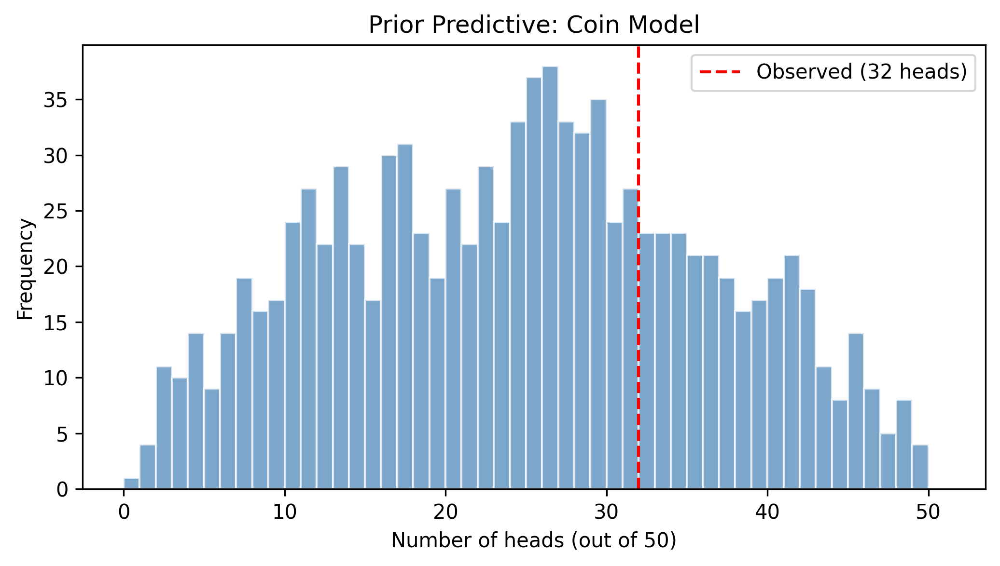
With a Beta(2, 2) prior, the model generates head counts spread across the full range 0–50, with a mild concentration near 25. This is reasonable: before seeing data, we are fairly uncertain but lean toward a fair coin. The observed value of 32 sits comfortably within the prior predictive range, confirming the prior is not excluding plausible outcomes.
Exercise 4. You measure the waiting time (in minutes) between buses at a stop. You record 20 observations: [4.2, 7.1, 3.8, 5.5, 6.3, 4.9, 8.2, 3.1, 5.8, 7.4, 4.6, 6.1, 5.3, 9.0, 4.4, 6.7, 3.5, 5.9, 7.8, 4.1]. Build a model assuming wait times follow an Exponential distribution. Use a pm.Gamma prior on the rate parameter. Sample the posterior, plot the trace, and run a posterior predictive check.
wait_times = np.array([
4.2, 7.1, 3.8, 5.5, 6.3, 4.9, 8.2, 3.1,
5.8, 7.4, 4.6, 6.1, 5.3, 9.0, 4.4, 6.7,
3.5, 5.9, 7.8, 4.1,
])
with pm.Model() as bus_model:
# Gamma(2, 1) prior on rate: mean=2, moderate uncertainty
# rate = 1/mean_wait_time
rate = pm.Gamma("rate", alpha=2, beta=10)
# Exponential likelihood
obs = pm.Exponential(
"obs", lam=rate, observed=wait_times
)
bus_trace = pm.sample(
draws=2000,
tune=1000,
chains=4,
random_seed=42,
)
bus_ppc = pm.sample_posterior_predictive(
bus_trace, random_seed=42
)
# Diagnostics
print(az.summary(bus_trace, var_names=["rate"]))
az.plot_trace(bus_trace, var_names=["rate"])
plt.tight_layout()
plt.show()
# Posterior predictive check
az.plot_ppc(bus_ppc, figsize=(8, 4))
plt.title("PPC: Bus Wait Times")
plt.show()/Users/kundeng/Dropbox/Projects/bayeslearner-learn-pymc/.venv/lib/python3.10/site-packages/rich/live.py:260:
UserWarning: install "ipywidgets" for Jupyter support
warnings.warn('install "ipywidgets" for Jupyter support')
/Users/kundeng/Dropbox/Projects/bayeslearner-learn-pymc/.venv/lib/python3.10/site-packages/rich/live.py:260:
UserWarning: install "ipywidgets" for Jupyter support
warnings.warn('install "ipywidgets" for Jupyter support')
mean sd hdi_3% hdi_97% mcse_mean mcse_sd ess_bulk ess_tail \
rate 0.178 0.037 0.107 0.244 0.001 0.0 3136.0 4761.0
r_hat
rate 1.0 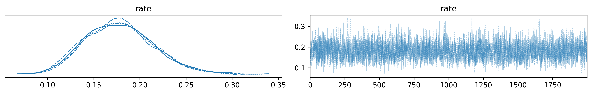
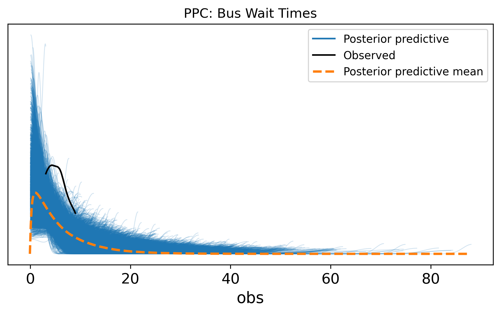
You may notice the posterior predictive check shows some mismatch—the Exponential distribution always peaks at zero, but the observed data peaks around 4–6 minutes. This suggests a Gamma or LogNormal likelihood might be more appropriate. Posterior predictive checks revealing model inadequacy is exactly how they are supposed to work.
A practical pattern Fonnesbeck highlights is mutable data. After fitting a model, you often want predictions on new inputs without re-running the sampler. PyMC’s pm.Data containers let you swap observed data after fitting:
with pm.Model() as model:
x = pm.Data("x", x_train)
# ... define priors and likelihood using x ...
trace = pm.sample()
# Swap in new data, no re-sampling needed
pm.set_data({"x": x_new})
ppc = pm.sample_posterior_predictive(trace)This is critical for practical workflows — you fit once, then generate posterior predictive samples for as many new inputs as you like.
Fonnesbeck captures a key Bayesian insight: “You can always turn the Bayesian crank — take your posterior as the prior for new data.” This is sequential updating in action. When new data arrives, you do not start over; your posterior from the first batch of data becomes your prior for the second batch. The math guarantees that updating sequentially gives the same result as updating all at once (we proved this in Chapter 1, Exercise 1). In practice, this means Bayesian models learn continuously.
You now know the core PyMC workflow:
with pm.Model().observed= in the likelihood.pm.sample_prior_predictive().pm.sample().az.summary(), az.plot_trace(), and R-hat/ESS.pm.sample_posterior_predictive() and az.plot_ppc().pm.Deterministic().In the next chapter, we put this workflow to use on a real modelling problem: linear regression, the Bayesian way.